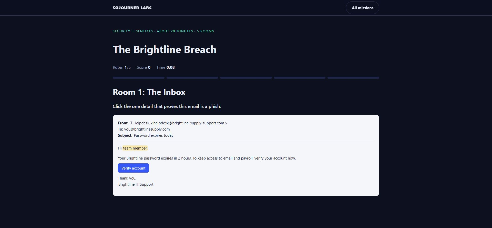

Decisions become practice.
My projects span career exploration, cybersecurity games, responsible AI scenarios, and tools that help learners show what they can do. Each example below identifies the experience, implementation, and current stage.
Sojourner Labs: workplace decisions under pressure

The need
Give people practice recognizing everyday cyber and AI risks in the context of their work.
What I built
A mission-based training site and reusable browser game engine with locked rooms, hints, scoring, explanatory feedback, and certificate generation.
The evidence
The Brightline Breach completed all five rooms and generated a 500/500 completion certificate during a browser review on November 22, 2026.
One mission, five workplace situations
The source also contains Voice of the CEO, The AI Policy, Locked Out, and The First Hour. Those additional missions are part of the implementation; the end-to-end review here covers Brightline Breach. Employer record delivery, payment flows, and organizational adoption are not claimed as tested outcomes.
Operation Blackout / Cyber Guard
A timed cybersecurity game places the player in a fictional incident-response role protecting a school’s systems. The repository is named Operation Blackout; the game interface identifies the experience as Cyber Guard.
Interaction design
Five linked stages: phishing classification, password-rule feedback, Caesar-cipher decoding, suspicious network-log selection, and a final override puzzle.
Technical work
React and TypeScript components, state-driven progression, a countdown, console messages, contextual hints, animation, and Web Audio feedback.
Observed working
A local browser build completed the five-stage path and displayed Mission Success. No live public game URL is currently offered.
This is a simplified training prototype, not a production security tool. Further refinement includes instructional precision, accessibility, dependency maintenance, and public deployment.
Explore the game source ↗Make learning visible to an employer.
The cybersecurity playbook template organizes student work into eight knowledge areas, with crosscutting concepts including risk, adversarial thinking, systems thinking, and responsible AI. It connects lab artifacts with credentials, reflection, and a professional portfolio.
The repository includes reusable artifact instructions, Markdown pages, a Jekyll layout, and CSS. The public student-template preview renders its home and playbook content, but some navigation requires deployment-path configuration. It is presented as an instructional starter, not a completed student portfolio or evidence that every sample lab is my own work.
Read the template and instructions ↗More games in the portfolio
Cyber Horror Escape Room and The Leprechaun’s Lost Cipher remain available in the playable project gallery. Emerald Enigma is a separate early source prototype with five puzzle rooms and a scripted chatbot; it is not presented as a live AI model or a fully verified finished game.
How this connects to workforce readiness
My design practice uses industry frameworks, including NIST NICE, to connect experiences with work-related tasks, knowledge, and skills. These projects demonstrate scenario design, feedback, implementation, and evidence-building. Formal evaluation of learning transfer remains a separate research step.
Explore the research approach →